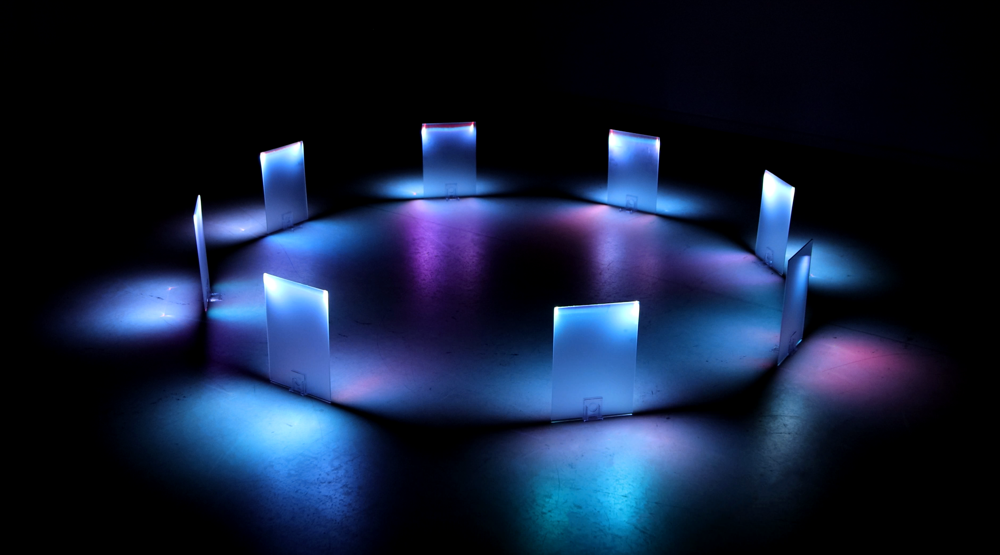
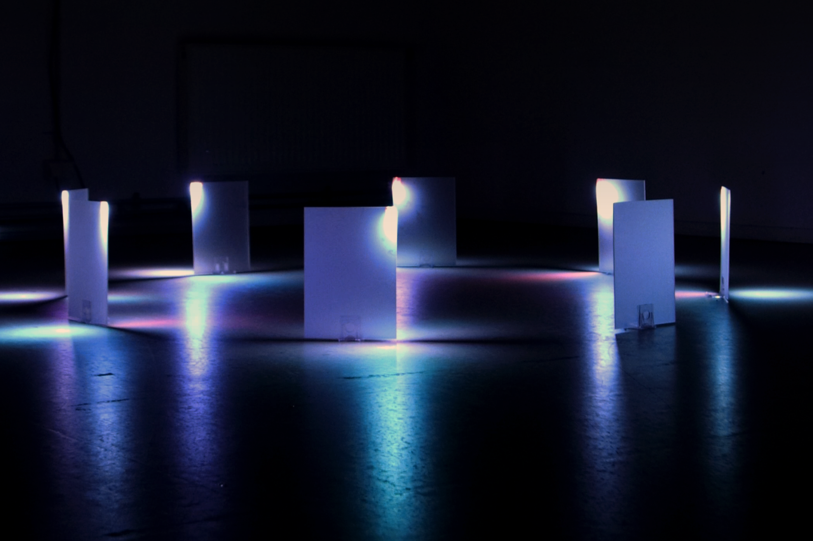
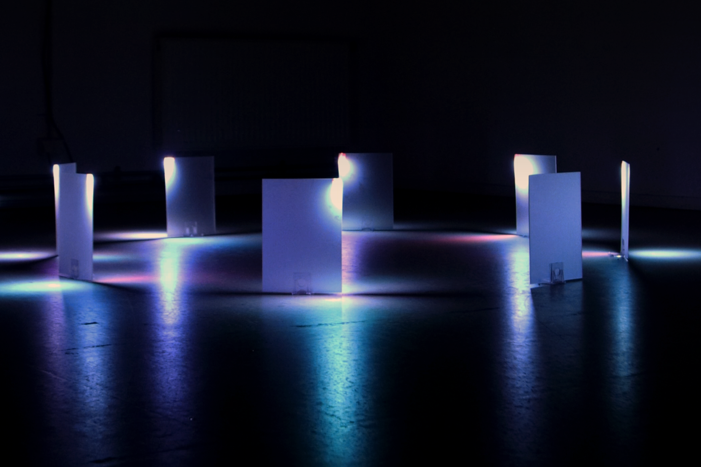
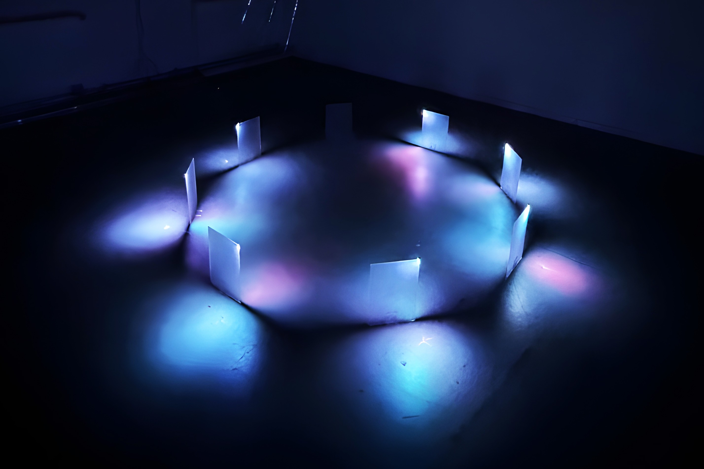
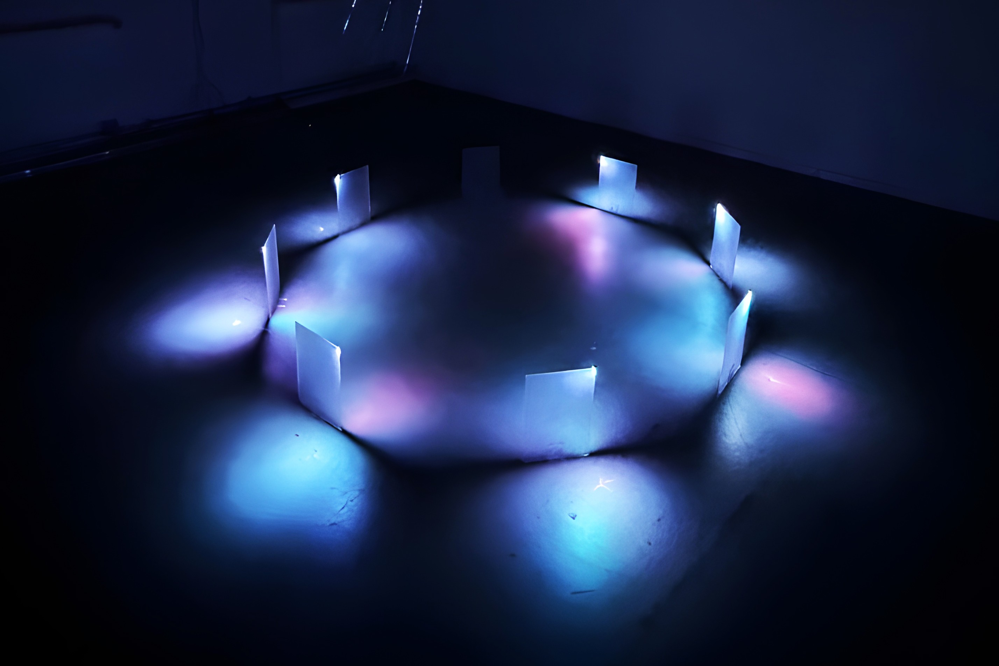
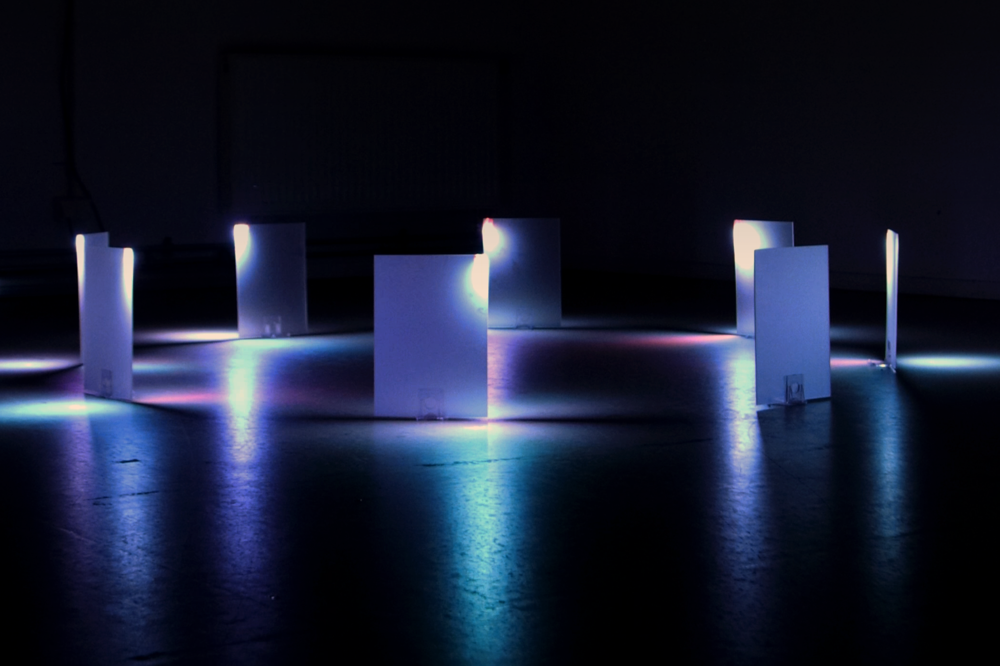
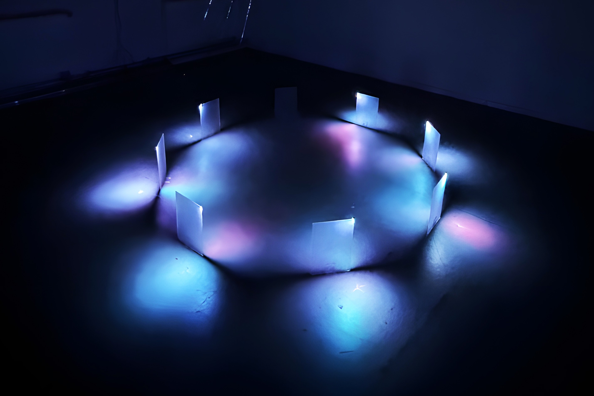
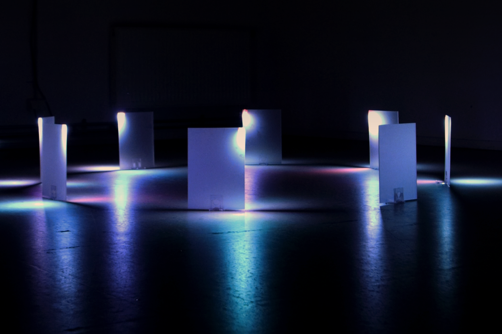
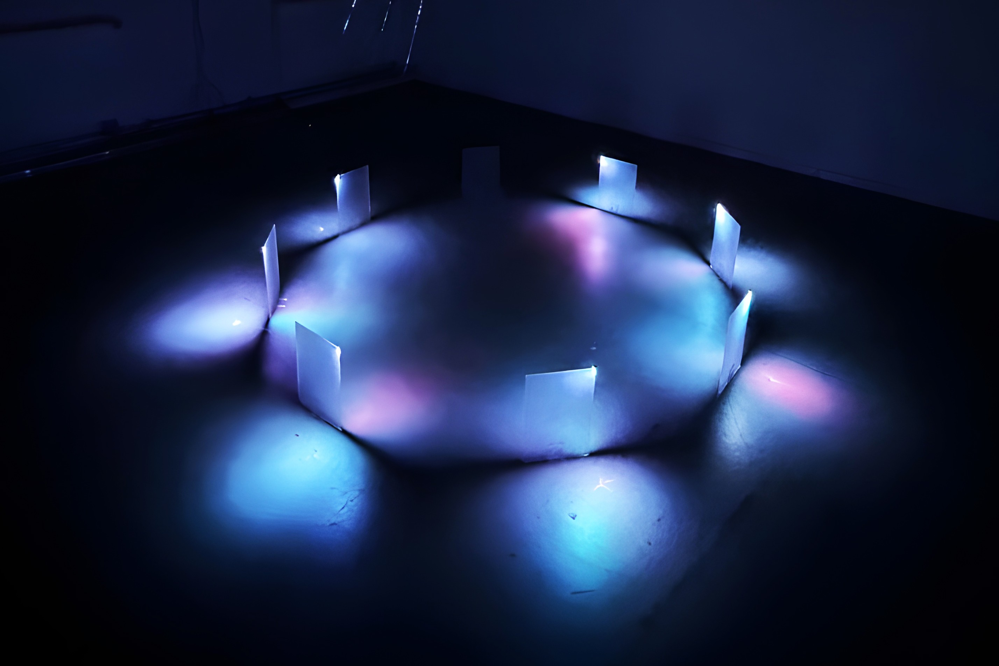

 

 







The Semiotics of Light is a scenographic lighting installation that explores the structures of perception, sanctity, immersion, and identity in the age of digitality. The installation begins with a question: "What do we immerse ourselves in, and what do we believe in today?”
The installation is composed of eight milky, semi-transparent A4-sized plexiglass sheets, all mounted vertically at human eye level on tall, tripod-shaped platforms. From above, a single high-precision laser projector blasts narrow white beams that precisely align with the top edge of each panel. At the point of contact, the beam scatters within the plexiglass, resulting in a gentle, spectrum dispersion across its surface. When combined with fog, this optical phenomenon transforms the surrounding environment into a ritualistic and immersive field of beats. Within this area, the spectator experiences both sensory excitation and self-disintegration. The project is a sensual ritual of perceptual reconstruction. The laser has no narrative content, but it becomes a rhythm, a symbol, and an emotional interface that induces the absorption process. With this, the work spatially translates the theoretical framework presented in the accompanying thesis, which is that light is a structuring language of emotion and perception.This work operates as a continuous loop with no beginning or ending. Flicker, refraction, and dispersion which the main optical phenomena studied in the thesis are generated in real time through algorithmic modulation. Visitors can enter and exit the installation at any point, reflecting the nonlinear nature of immersive experiences in contemporary media contexts.